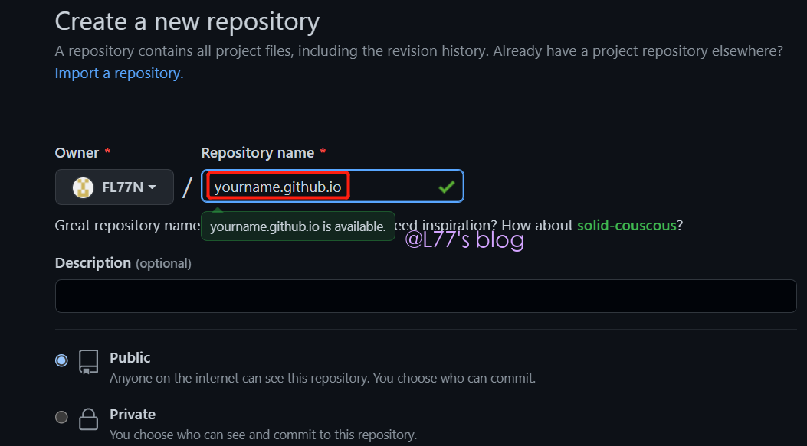
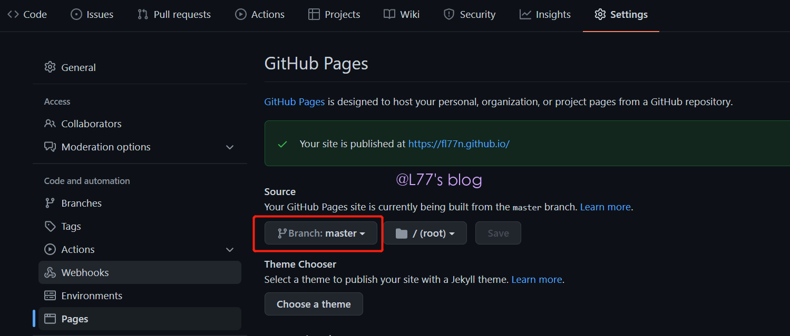
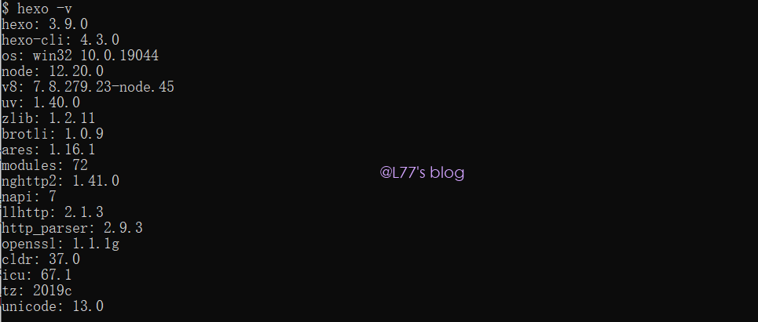
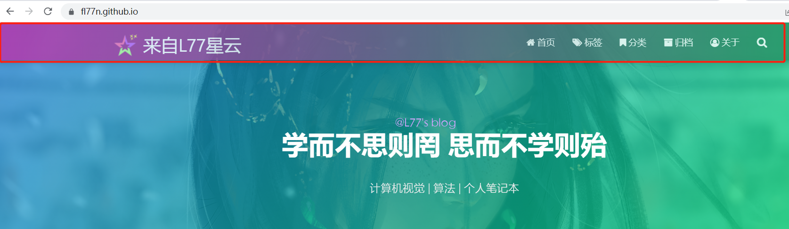
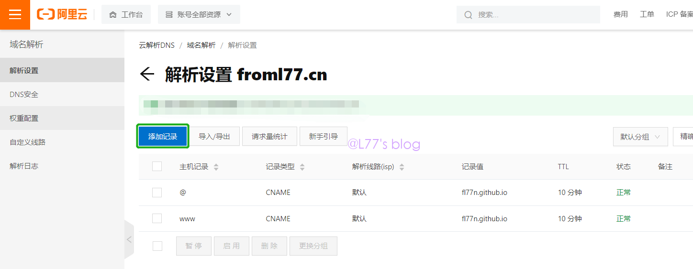
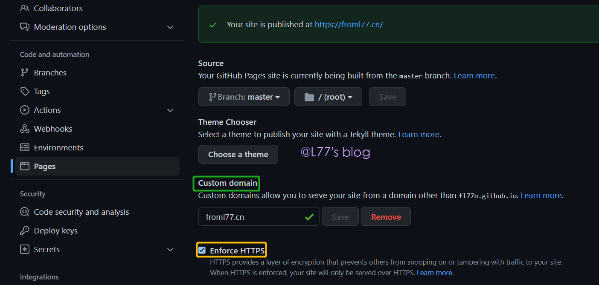
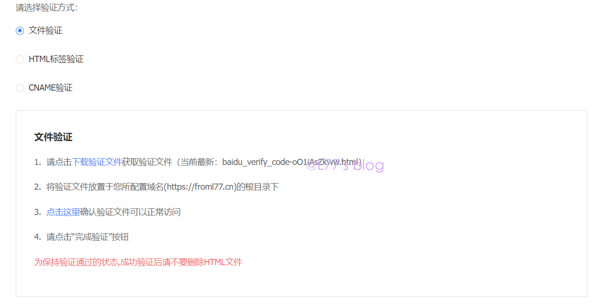
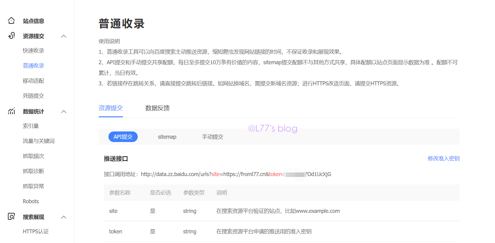
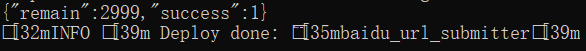
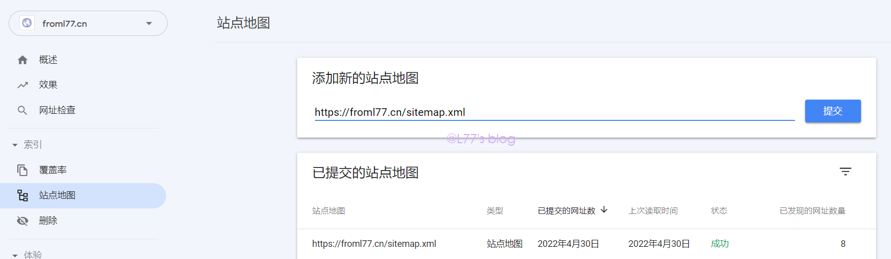

♠ 开篇
虽然之前用 CSDN 和博客园写过博客，但这算是我第一个真正的个人博客。感觉 matery 这个主题做的十分优美，因此选择了它作为主题部署。第一篇博文做一个记录。
♣博客搭建过程
在搭建博客之前，需要先安装分布式版本控制工具 Git，之后我们可以直接用它来执行安装的命令。由于这个不是本次的重点，大家可以自行上网搜索安装教程。然后需要一个 Github 账号，我们最终需要将其部署到 Github 上去，然后需要去搜索如何将 Github 与本地连接。

新建一个 repository，必须以红框的格式命名 xxx.github.io（其中 xxx 为你的 Github 用户名）。

然后点击该 repository 的 setting，里面有一个 Pages。选择红框中的某一分支作为你部署博客的代码，然后再选择一个主题（choose a theme）。
Hexo 博客框架的安装
Hexo 与 Node.js 版本对应问题可以查看官网
首先是安装 Node.js：这里直接去官网里面下载，不过要注意它和 Hexo 的版本，我这里的 node 是 12.20.0。安装的过程就是一录 next 就行。
然后就是安装 Hexo：首先需要新建一个文件夹，作为装你博客以及搭建博客源码的地方；然后在该目录下右键点击 “Git Bash Here”，这个时候会弹出一个控制台，接下来以及以后发布博客都在该控制台操作。输入
npm i hexo-cli -g安装 Hexo，然后输入hexo -v验证是否安装成功。我的如下图：
最后输入
hexo init初始化文件夹，输入npm install安装必要的依赖。这个时候需要先修改 _config.yml 中的个人信息：
# 这部分内容需要改成自己的信息 title: your title subtitle: your subtitle description: your description keywords: your keywords author: your name language: zh-CN timezone: # Deployment # Docs: https://hexo.io/docs/deployment.html deploy: type: git repository: https://github.com/xxx/xxx.github.io branch: master # Extensions ## Plugins: https://hexo.io/plugins/ ## Themes: https://hexo.io/themes/ theme: matery # Pagination # 最好设置为 12 per_page: 12 pagination_dir: page index_generator: path: '' per_page: 12 order_by: -date
最后在控制台里面输入
npm i hexo-deployer-git这样就直接将网页用hexo -d推上个人博客网站了。图片的显示问题解决为：将 hexo 的 config 文件中
post_asset_folder的值设置为true，所使用路径为./xxx.png。Hexo 的升级：
npm install -g npm-check # 检查之前安装的插件，都有哪些是可以升级的 npm install -g npm-upgrade # 升级系统中的插件 npm-check npm-upgrade # 更新 hexo 及所有插件 npm update # 确认 hexo 已经更新 hexo -v
主题的设置
在上面的 hexo config 文件也看到，会将 theme 设置为 matery。其实原 repository 里面的文档已经很详细了，issue 里面也有很多同学问的问题可以帮忙解决一些，也有中文文档。先将其下载下来然后将放到 hexo 目录下的 themes 文件夹里（也就是你可以搞很多主题，以后就在 hexo config 里面换就好了），之后的事按照它的说明文档来就好了。我这里就记录一下我改动过的地方分别在什么文件里面（大部分用浏览器的开发者模式也能找得到位置）。其中所有在 matery.css 中的修改都可以直接加在 my.css 中，文章末尾有我的修改。
subtitle 字体的大小
在 \themes\matery\source\css 文件夹中的 matery.css
.bg-cover .title { font-size: 3rem; font-weight: 700; line-height: 1.85em; margin-bottom: 20px; position: relative; }修改 font-size 对应的值就能调整大小
导航栏的颜色变化

在 \themes\matery\source\css 文件夹中的 matery.css
.bg-color { background-image: linear-gradient(to right, #bf30ac 0%, #0f9d58 100%); opacity: 0.8; }#bf30ac 和 #0f9d58 是左右端的颜色，opacity 是不透明度。
banner 背景色的变换
在 \themes\matery\source\css 文件夹中的 matery.css
.bg-cover:after { -webkit-animation: rainbow 60s infinite; animation: rainbow 60s infinite; } @-webkit-keyframes rainbow { } @keyframes rainbow { }这里把内容删去，调节里面的颜色就好了。
底部的设置
在 \themes\matery\layout\_partial 文件夹中的 footer.ejs 可修改运行时间，人数统计的初始值。
关于底部进度条在 \themes\matery\source\css 文件夹中的 matery.css
.progress-bar { height: 4px; position: fixed; bottom: 0; z-index: 300; background: linear-gradient(to right, #bf30ac 0%, #0f9d58 100%); opacity: 0.8; }背景图的每日一换
在 \themes\matery\layout\_partial 文件夹中的 bg-cover-content.ejs
修改鼠标指到网页标签出现的字
在 \themes\matery\layout 文件夹中的 layout.ejs 添加
<script type="text/javascript"> var OriginTitile = document.title, st; document.addEventListener("visibilitychange", function () { document.hidden ? (document.title = "来自L77星云！", clearTimeout(st)) : (document.title = "来自L77的流星雨🌈", st = setTimeout(function () { document.title = OriginTitile }, 3e3)) }) </script>增加文章目录的滚动条
在 \themes\Matery\layout\_partial 文件夹中的 post-detail-toc.ejs 增加如下代码：
#toc-content { height: calc(100vh - 250px); overflow: scroll; }Font Awesome
直接访问官网，注意只能用免费的
不蒜子计数初始值纠正
<!-- 不蒜子计数初始值纠正 --> <script> $(document).ready(function () { var int = setInterval(fixCount, 50); var pvcountOffset = 1; var uvcountOffset = 1; function fixCount() { if (document.getElementById("busuanzi_container_site_pv").style.display != "none") { $("#busuanzi_value_site_pv").html(parseInt($("#busuanzi_value_site_pv").html()) + pvcountOffset); clearInterval(int); } if ($("#busuanzi_container_site_pv").css("display") != "none") { $("#busuanzi_value_site_uv").html(parseInt($("#busuanzi_value_site_uv").html()) + uvcountOffset); // 加上初始数据 clearInterval(int); } } }); </script>关于公式显示的问题
出现的问题的原因都是因为转义问题。网上的解决方案很多，有建议用
hexo-renderer-kramed替代hexo-renderer-marked再进行相应的修改的，但是这样做就可能导致代码无法高亮显示。另外，使用较低版本的 hexo 还有讲英文括号转为 “$” 从而显示为公式的问题，建议 5.0.0 以上。而且最好不要安装较高版本的hexo-renderer-marked，这里使用npm uninstall hexo-renderer-marked --save npm install hexo-renderer-marked@2.0.0 --save并将 node_modules\marked\lib\marked.js 中的
escape: /^\\([!"#$%&'()*+,\-./:;<=>?@\[\]\\^_`{|}~])/, 改成 escape: /^\\([!"#$&'()*+,\-./:;<=>?@\[\]^_`|~])/, em 处改为： em:/^\*((?:\*\*|[\s\S])+?)\*(?!\*)/, inline._escapes = /\\([!"#$%&'()*+,\-./:;<=>?@\[\]\\^_`{|}~])/g; 改成 inline._escapes = /\\([!"#$&'()*+,\-./:;<=>?@\[\]^_`|~])/g;另外在书写的时候星号前要加
\，换行使用四条斜线，如果连续出现了花括号一定要加上空格，这样基本能正常显示公式。评论的添加
需要去 Github 申请一个应用，其中：
Application name # 随便填 Homepage URL # 填自己的博客地址 Application description # 随便填 Authorization callback URL # 填自己的博客地址将注册的结果填到主题的 config 文件里
gitalk: enable: true owner: github用户名 repo: github用户名.github.io oauth: clientId: 可在注册结果中查询 clientSecret: 可在注册结果中查询 admin: 你的github用户名Valine 评论的开启可以百度 hexo valine 或者参考这篇博客注册LeanClound，获取APP ID 和 APP Key。最好选择华东节点。
文章的 Front-matter 预设
对
/scaffolds/post.md进行修改，方便之后写文章：title: {{ title }} date: {{ date }} top: false cover: false password: toc: true mathjax: false summary: categories: tags:
另外在编辑文件的时候使用 UTF-8 编码，不然可能出现乱码。这就是我修改的大部分内容了，接下来就是如何写文章了。
写文章
首先在 hexo 的目录下，右键 Git Bash Here 打开控制台，输入 hexo n post "first blog" 然后可以看到在 \source\_posts 文件夹下多一个 first-blog.md，图片放到 first-blog 文件夹里，博客就从这里开始。
写完后，先清理之前的数据，输入 hexo clean。然后 hexo g 生成新的网页，同时可以用 hexo s 查看新生成的网页效果。
最后转到文件夹 \public 重新打开控制台，这个文件夹才是我们要部署上去的，使用 hexo d 推到 github。
这时可以去你的个人博客看效果啦 🍨🍨🍨
♠博客收录过程
注册自定义域名
首先，我们想要 Google 或者 Baidu 需要去各类云（阿里云、百度云、华为云等）注册一个自定义域名（就是你自己取的名字的域名，一般几十块一年），因为 Github 的 Pages 不允许它们爬东西的。你在该云买了域名后，它有个域名解析，然后如下添加两条解析记录：

添加解析之后，别人搜索你的自定义域名就可以直接转过来了。最后需要去 Github 上添加你的自定义域名，然后勾选 Enforce HTTPS 让浏览器不报警。

打开博客的 \source 目录，新建一个 CNAME 文件（具体方式，就是先建一个命名为 CNAME 的 txt 文件，然后再删除后缀）。然后用打开 txt 的方式打开，在里面写上你的域名。最后 hexo g 生成，然后在 \public 文件夹hexo d上传到 github。
添加百度、谷歌收录
想要别人能在百度或谷歌能搜索到你的博客，首先得你的个人博客网站被它们收录。接下来，我分别介绍一下流程。
百度收录过程
首先需要访问百度搜索资源官网（使用你的百度云盘登录即可），登录之后在最上面一行选择【用户中心】中的【站点管理】，然后就能看到可以提交链接的界面了（协议头最好选择 https）。
接着它会让你验证网站的所有权（证明网站是你的）如下图：

我试过第三种方式，弄了很久没有成功，最后我选择使用第一种方式，下载它给的文件后放到主题目录 \source 文件夹，然后重新部署完成验证。
然后需要设置向百度自动推送自己网站的方式（就是你每更新一次就向它提交一次最新的版本）。先在 hexo 博客目录安装 npm install hexo-baidu-url-submit --save ，接着在博客的 _config.yml 中添加如下代码：
baidu_url_submit:
count: 100 # 提交最新的多少个链接
host: www.yoursite.com # 在百度搜索资源官网中添加的域名
token: your_token # 秘钥
path: baidu_urls.txt # 文本文档的地址， 新链接会保存在此文本文档里在百度搜索资源官网首页中普通收录的入口，可以看到如下界面，其中密钥就是token等号后面的：

接续在博客的 _config.yml 中进行如下修改：
# URL
url: https://www.yoursite.com
root: /
permalink: :year/:month/:day/:title/
# Deployment
## Docs: https://hexo.io/docs/deployment.html
deploy:
- type: git
repository: https://github.com/FL77N/FL77N.github.io
branch: master
- type: baidu_url_submitter # 这是新加的主动推送
Plugins:
- hexo-generator-baidu-sitemap
- hexo-generator-sitemap
baidusitemap:
path: baidusitemap.xml
sitemap:
path: sitemap.xml重新部署一遍，可以看到推送成功的标志：

谷歌收录过程
谷歌是采用 sitemap 的方式。在经历上述操作后，我们需要先使用以下命令生成网站地图：
npm install hexo-generator-sitemap --save # 谷歌的
npm install hexo-generator-baidu-sitemap --save # 百度的同样先来到现在谷歌中搜索 google search console 来到谷歌站长平台。同样先验证网站所有权：
我选择的左边的方式，这里可能你需要先删除之前 CNAME 的一条域名解析，等验证完所有权后再加回来。
谷歌的收录提交 sitemap 就好了，如下：

不过我最开始一直无法获取，可能是有点慢，过一天就好了。如果过了一天也不行，再搜一下是不是其他问题。
至此，基于 Hexo 的个人博客部署差不多完结 🌸🌸🌸
附修改
/* Here is your custom css styles. */
@media only screen and (max-width: 601px) {
.bg-cover .title {
font-size: 1rem;
}
}
.bg-cover .title {
font-size: 3rem;
font-weight: 700;
line-height: 1.85em;
margin-bottom: 20px;
position: relative;
}
.bg-color {
background-image: linear-gradient(to right, #bf30ac 0%, #0f9d58 100%);
opacity: 0.8;
}
.bg-cover:after {
-webkit-animation: rainbow 60s infinite;
animation: rainbow 60s infinite;
}
@-webkit-keyframes rainbow {
0%,
100% {
background: rgba(0,242,96, 0.75);
background: linear-gradient(45deg, rgba(0,242,96, 0.75) 0%, rgba(5,117,230, 0.65) 100%);
background: -moz-linear-gradient(135deg, rgba(0,242,96, 0.75) 0%, rgba(5,117,230, 0.65) 100%);
background: -webkit-linear-gradient(135deg, rgba(0,242,96, 0.75) 0%, rgba(15,117,230, 0.65) 100%);
}
16% {
background: rgba(255,110,127, 0.75);
background: linear-gradient(45deg, rgba(255,110,127, 0.75) 0%, rgba(191,233,255, 0.65) 100%);
background: -moz-linear-gradient(135deg, rgba(255,110,127, 0.75) 0%, rgba(191,233,255, 0.65) 100%);
background: -webkit-linear-gradient(135deg, rgba(255,110,127, 0.75) 0%, rgba(191,233,255, 0.65) 100%);
}
32% {
background: rgba(28,146,210, 0.75);
background: linear-gradient(45deg, rgba(28,146,210, 0.75) 0%, rgba(242,252,254, 0.65) 100%);
background: -moz-linear-gradient(135deg, rgba(28,146,210, 0.75) 0%, rgba(242,252,254, 0.65) 100%);
background: -webkit-linear-gradient(135deg, rgba(28,146,210, 0.75) 0%, rgba(242,252,254, 0.65) 100%);
}
48% {
background: rgba(0,4,40, 0.75);
background: linear-gradient(45deg, rgba(0,4,40, 0.75) 0%, rgba(0,78,146, 0.65) 100%);
background: -moz-linear-gradient(135deg, rgba(0,4,40, 0.75) 0%, rgba(0,78,146, 0.65) 100%);
background: -webkit-linear-gradient(135deg, rgba(0,4,40, 0.75) 0%, rgba(0,78,146, 0.65) 100%);
}
64% {
background: rgba(255,75,31, 0.75);
background: linear-gradient(45deg, rgba(255,75,31, 0.75) 0%, rgba(31,221,255, 0.65) 100%);
background: -moz-linear-gradient(135deg, rgba(255,75,31, 0.75) 0%, rgba(31,221,255, 0.65) 100%);
background: -webkit-linear-gradient(135deg, rgba(255,75,31, 0.75) 0%, rgba(31,221,255, 0, 0.65) 100%);
}
80% {
background: rgba(252,0,255, 0.75);
background: linear-gradient(45deg, rgba(252,0,255, 0.75) 0%, rgba(0,219,222, 0.65) 100%);
background: -moz-linear-gradient(135deg, rgba(252,0,255, 0.75) 0%, rgba(0,219,222, 0.65) 100%);
background: -webkit-linear-gradient(135deg, rgba(252,0,255, 0.75) 0%, rgba(0,219,222, 0.65) 100%);
}
}
@keyframes rainbow {
0%,
100% {
background: rgba(0,242,96, 0.75);
background: linear-gradient(45deg, rgba(0,242,96, 0.75) 0%, rgba(5,117,230, 0.65) 100%);
background: -moz-linear-gradient(135deg, rgba(0,242,96, 0.75) 0%, rgba(5,117,230, 0.65) 100%);
background: -webkit-linear-gradient(135deg, rgba(0,242,96, 0.75) 0%, rgba(15,117,230, 0.65) 100%);
}
16% {
background: rgba(255,110,127, 0.75);
background: linear-gradient(45deg, rgba(255,110,127, 0.75) 0%, rgba(191,233,255, 0.65) 100%);
background: -moz-linear-gradient(135deg, rgba(255,110,127, 0.75) 0%, rgba(191,233,255, 0.65) 100%);
background: -webkit-linear-gradient(135deg, rgba(255,110,127, 0.75) 0%, rgba(191,233,255, 0.65) 100%);
}
32% {
background: rgba(28,146,210, 0.75);
background: linear-gradient(45deg, rgba(28,146,210, 0.75) 0%, rgba(242,252,254, 0.65) 100%);
background: -moz-linear-gradient(135deg, rgba(28,146,210, 0.75) 0%, rgba(242,252,254, 0.65) 100%);
background: -webkit-linear-gradient(135deg, rgba(28,146,210, 0.75) 0%, rgba(242,252,254, 0.65) 100%);
}
48% {
background: rgba(0,4,40, 0.75);
background: linear-gradient(45deg, rgba(0,4,40, 0.75) 0%, rgba(0,78,146, 0.65) 100%);
background: -moz-linear-gradient(135deg, rgba(0,4,40, 0.75) 0%, rgba(0,78,146, 0.65) 100%);
background: -webkit-linear-gradient(135deg, rgba(0,4,40, 0.75) 0%, rgba(0,78,146, 0.65) 100%);
}
64% {
background: rgba(255,75,31, 0.75);
background: linear-gradient(45deg, rgba(255,75,31, 0.75) 0%, rgba(31,221,255, 0.65) 100%);
background: -moz-linear-gradient(135deg, rgba(255,75,31, 0.75) 0%, rgba(31,221,255, 0.65) 100%);
background: -webkit-linear-gradient(135deg, rgba(255,75,31, 0.75) 0%, rgba(31,221,255, 0, 0.65) 100%);
}
80% {
background: rgba(252,0,255, 0.75);
background: linear-gradient(45deg, rgba(252,0,255, 0.75) 0%, rgba(0,219,222, 0.65) 100%);
background: -moz-linear-gradient(135deg, rgba(252,0,255, 0.75) 0%, rgba(0,219,222, 0.65) 100%);
background: -webkit-linear-gradient(135deg, rgba(252,0,255, 0.75) 0%, rgba(0,219,222, 0.65) 100%);
}
}
.progress-bar {
height: 4px;
position: fixed;
bottom: 0;
z-index: 300;
background: linear-gradient(to right, #bf30ac 0%, #0f9d58 100%);
opacity: 0.8;
}